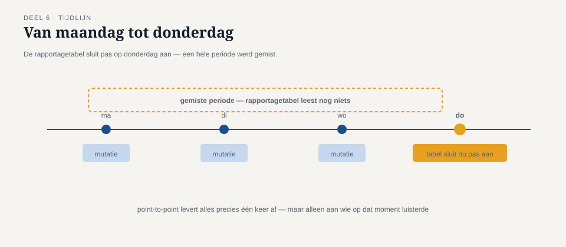
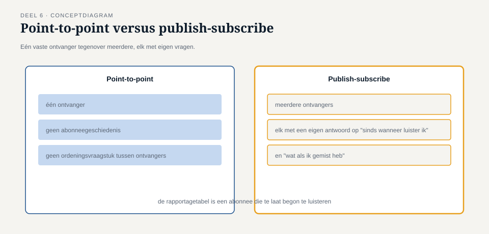

Deel 6 — Point-to-point vs. publish-subscribe kanalen, verdiept
Reader · Ductus-cursus Enterprise Integration Patterns · niveau 1 (fundament) · deel 6 van 10
6.0 Het Nabestaandenloket dat een week miste
In deel 2 is het onderscheid tussen point-to-point en publish-subscribe geïntroduceerd als een keuze die "vroeg in het ontwerp" gemaakt moet worden. Bij Meridiaan bleek die vroege keuze niet vroeg genoeg te zijn gemaakt: het mutatie-gebeurd-kanaal werd aanvankelijk gebouwd als publish-subscribe met twee geabonneerden, het Nabestaandenloket en de audit-trail. Toen drie maanden later een derde geabonneerde nodig bleek — een nieuwe rapportagetabel voor de risicomanagementafdeling — leek dat triviaal: nog een abonnee erbij.
Het probleem werd zichtbaar in de eerste testweek. De rapportagetabel werd pas op donderdag aangesloten, maar de eerste rapportagevraag ("hoeveel dienstverbandmutaties zijn er deze maand geweest") verwachtte ook de mutaties van maandag tot en met woensdag. Die waren echter al gepubliceerd vóórdat de rapportagetabel bestond — en waren, zoals bij de meeste publish-subscribe-implementaties, allang niet meer beschikbaar op het kanaal. De risicomanagementafdeling constateerde een week later dat er "mutaties ontbraken", wat feitelijk geen fout was: de gebeurtenissen waren precies zo behandeld als het patroon voorschrijft. Ze waren gewoon te laat komen luisteren.
Dit deel gaat over wat "een abonnee toevoegen" precies betekent, en over drie ontwerpvragen die bij point-to-point vanzelfsprekend zijn maar bij publish-subscribe expliciet beantwoord moeten worden.

6.1 Wat point-to-point garandeert, vanzelf
Bij een point-to-point-kanaal is er precies één ontvanger per bericht — ook als er meerdere consumenten naar hetzelfde kanaal luisteren (bijvoorbeeld voor schaalbaarheid), wordt elk individueel bericht door precies één van hen opgepikt en verwerkt. Dit brengt twee eigenschappen met zich mee die zelden apart worden benoemd omdat ze zo vanzelfsprekend aanvoelen:
Er is precies één verantwoordelijke voor elk bericht. Als het bericht is verwerkt, is de taak gedaan. Er is geen vraag "wie heeft dit nog meer nodig" — het antwoord is per definitie "niemand anders, want er is maar één ontvanger".
Een nieuwe consument die zich aansluit, hoeft niet met terugwerkende kracht iets te weten. Een tweede worker die aan een bestaand point-to-point-kanaal wordt toegevoegd, pakt simpelweg berichten op die ná zijn aansluiting binnenkomen (of nog in de wachtrij staan) — er is geen concept van "gemiste geschiedenis", want elk bericht wordt sowieso maar één keer verwerkt, door wie dan ook het eerst beschikbaar is.
Deze twee eigenschappen zijn precies de reden dat het Nabestaandenloket-incident bij point-to-point nooit had kunnen gebeuren zoals het gebeurde: bij point-to-point is er geen "ik was niet op tijd geabonneerd", omdat er geen abonnement is — er is alleen een wachtrij die wacht tot iemand het bericht ophaalt.
6.2 Wat publish-subscribe expliciet vraagt
Bij publish-subscribe verandert dit fundamenteel: elke geabonneerde ontvangt een eigen kopie van elk bericht, en of iets "gemist" wordt, hangt volledig af van ontwerpbeslissingen die bij point-to-point niet eens bestaan. Drie vragen moeten expliciet worden beantwoord, en het niet-beantwoorden ervan is zelf ook een antwoord — meestal het slechtst mogelijke.
Vraag 1: wat gebeurt er met berichten die zijn gepubliceerd vóórdat een abonnee bestond? Het standaardantwoord van de meeste messaging-technologieën is: niets — die berichten zijn domweg niet meer beschikbaar voor een laat aangesloten abonnee, precies zoals bij de rapportagetabel. Als dit niet het gewenste gedrag is, moet er expliciet een mechanisme komen: bijvoorbeeld een gedeeld archief waar nieuwe abonnees historische gebeurtenissen uit kunnen "inhalen" (in niveau 3 uitgewerkt onder event sourcing, deel 24), of simpelweg de afspraak dat een nieuwe abonnee altijd pas na een geplande koppelmoment wordt aangesloten, met een handmatige inhaalslag voor de periode ervoor.
Vraag 2: wat gebeurt er als een bestaande abonnee tijdelijk niet luistert? Bij een storing, onderhoud of een crash mist een publish-subscribe-abonnee berichten die in die periode zijn gepubliceerd — tenzij de gekozen technologie en configuratie expliciet garanderen dat gemiste berichten bij terugkomst alsnog worden afgeleverd (vaak "persistent subscriptions" of vergelijkbare mechanismen genoemd, technologie-afhankelijk en dus onderwerp van de Toolbijlage). Zonder die garantie is een tijdelijke storing bij één abonnee een permanent gat in zijn gegevens, ook al functioneerden de andere abonnees en de zender gewoon door.
Vraag 3: is elke abonnee onafhankelijk van de andere, of veronderstelt er één iets over de ander? Bij Meridiaan bleek de audit-trail impliciet te veronderstellen dat het Nabestaandenloket de mutatie eerst had verwerkt — een aanname die nergens was vastgelegd en die alleen aan het licht kwam toen de twee abonnees door een tijdelijke vertraging bij het Nabestaandenloket in een andere volgorde werden afgerond dan verwacht. Publish-subscribe garandeert geen enkele volgordelijke afhankelijkheid tussen abonnees — als die afhankelijkheid nodig is, moet ze expliciet worden ontworpen (bijvoorbeeld door de audit-trail zelf te laten wachten op een bevestiging van het Nabestaandenloket, wat een aparte, bewuste ontwerpkeuze is en geen automatisch gevolg van "ze zijn allebei geabonneerd").
Kernzin 6 van de cursus: bij publish-subscribe is niets gegarandeerd wat je niet expliciet hebt ontworpen — elke aanname die bij point-to-point "vanzelfsprekend" aanvoelde, moet opnieuw en met opzet worden gemaakt.

6.3 Een abonnee toevoegen is geen gratis operatie
Het Nabestaandenloket-incident begon met de veronderstelling dat "nog een abonnee erbij" een kleine, risicovrije toevoeging was. Dat klopt voor de zender: die hoeft niets te wijzigen — dat is precies de ontkoppeling die publish-subscribe belooft. Maar voor het geheel is het geen gratis operatie, want elke nieuwe abonnee introduceert opnieuw de drie vragen uit 6.2, specifiek voor die abonnee.
Een praktisch controlepunt bij het aansluiten van een nieuwe abonnee op een bestaand publish-subscribe-kanaal:
- Heeft deze abonnee historische gegevens nodig van vóór zijn aansluitmoment? Zo ja: hoe wordt dat opgelost — inhaalmechanisme, of bewust geaccepteerd gat?
- Wat gebeurt er met deze abonnee specifiek als hij tijdelijk offline is? Is dataverlies voor hem acceptabel, of niet?
- Veronderstelt deze abonnee iets over de volgorde ten opzichte van bestaande abonnees, of over iets dat een andere abonnee eerst gedaan moet hebben?
Bij Meridiaan is dit controlepunt na het incident als vaste stap in het aansluitproces van nieuwe abonnees opgenomen — niet als bureaucratie, maar omdat de kosten van het overslaan ervan (een week onverklaarbaar "missende" data, en het bijbehorende vertrouwensverlies bij de risicomanagementafdeling) hoger bleken dan de kosten van de vraag zelf.
6.4 Terugkoppeling naar de kanaalkeuze uit deel 2
Deel 2 introduceerde de regel: een kanaal is óf point-to-point óf publish-subscribe, nooit allebei tegelijk voor dezelfde toepassing. Dit deel voegt daar een praktische consequentie aan toe: de keuze voor publish-subscribe is een belofte aan elke toekomstige abonnee dat hij zelf verantwoordelijk is voor de drie vragen uit 6.2 — niet een belofte dat het platform dat voor hem regelt, tenzij expliciet zo gebouwd.
Dit is geen pleidooi om publish-subscribe te vermijden — het blijft, zoals in deel 2 vastgesteld, het juiste patroon zodra meerdere onafhankelijke partijen op hetzelfde feit moeten kunnen reageren (signaal 3 uit deel 1). Het is een pleidooi om de garanties die je nodig hebt, met opzet in te bouwen, in plaats van aan te nemen dat "geabonneerd zijn" ze automatisch meebrengt.
Samenvatting van deel 6
- Point-to-point garandeert vanzelf: precies één verantwoordelijke per bericht, en geen concept van "gemiste geschiedenis" voor nieuwe consumenten.
- Publish-subscribe garandeert dat niet vanzelf — drie vragen moeten expliciet beantwoord worden: wat gebeurt er met berichten van vóór het abonnement, wat gebeurt er bij tijdelijke afwezigheid van een abonnee, en veronderstelt een abonnee iets over de volgorde ten opzichte van andere abonnees.
- Een nieuwe abonnee toevoegen is voor de zender gratis, maar voor het geheel niet — elke nieuwe abonnee herintroduceert de drie vragen, specifiek voor die abonnee.
- Kernzin 6: bij publish-subscribe is niets gegarandeerd wat je niet expliciet hebt ontworpen.
Vooruitblik
Deel 7 gaat over betrouwbaarheid: wat "gegarandeerd" in de vorige zin precies kan betekenen, met idempotentie als eerste bouwsteen — hoe voorkom je dat een bericht dat toch twee keer wordt afgeleverd, ook twee keer wordt verwerkt?